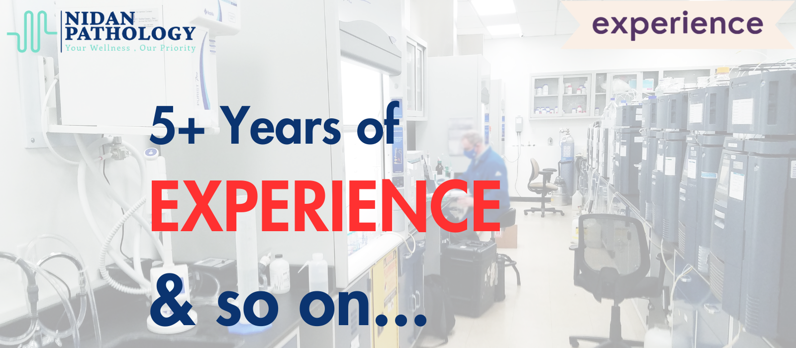
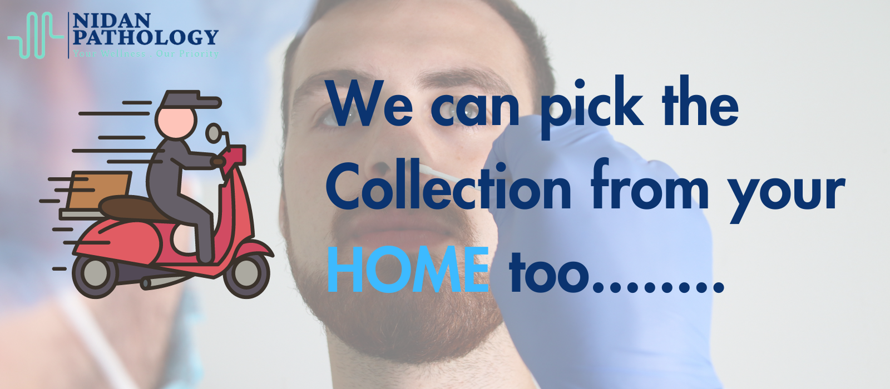
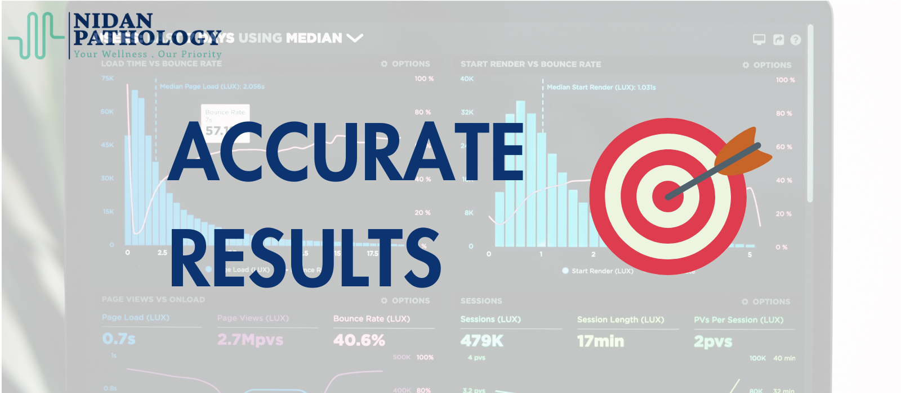
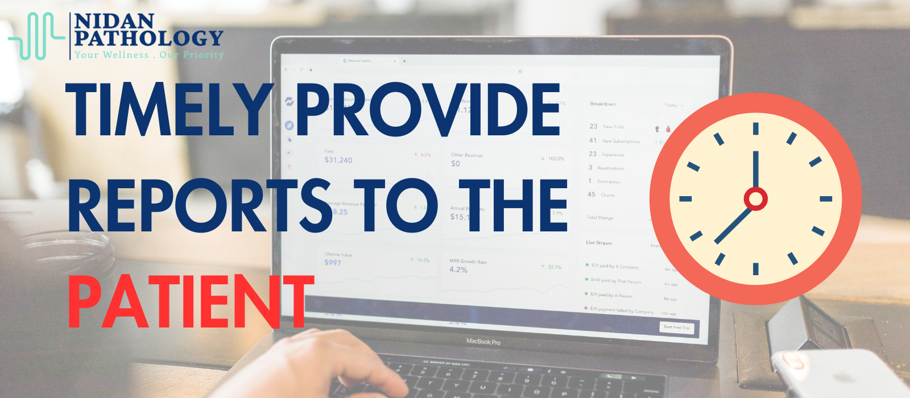
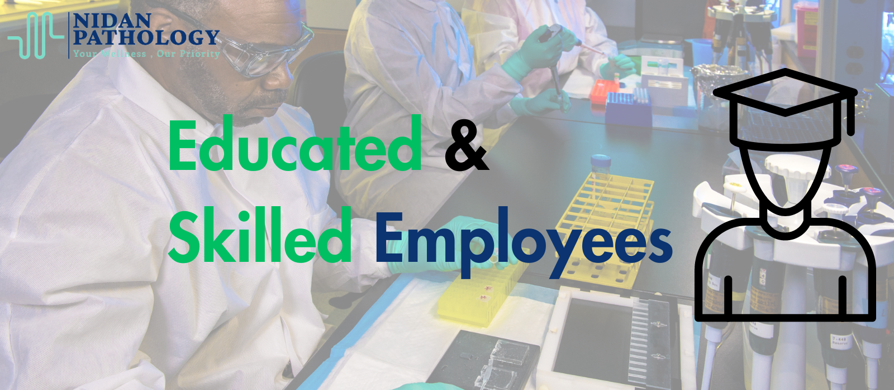

Welcome to Nidan Pathology, your trusted partner in precise diagnostics. With over 5+ years of establishment in Sultanpur, we take pride in offering a comprehensive range of pathology services with a personalized touch.
Our state-of-the-art
laboratory provides 500+ blood tests, ensuring that you have access to a wide array of health insights. We are committed to accuracy, delivering reliable and dependable results, empowering you to make informed decisions about your
well-being.
At Nidan Pathology, we prioritize efficiency, providing fast results without any delays. Our dedicated team of educated and skilled employees ensures that your tests are processed with utmost care and professionalism.
We understand the importance of convenience, and thus, we go the extra mile to make the process easier for you. Our home sample collection service allows you to get tested from the comfort of your own home, saving you time
and effort.
We believe that excellent service is the cornerstone of a memorable healthcare experience. Our mission is to provide you with top-notch services, so you feel valued and cared for throughout your diagnostic journey.
Embrace the future of diagnostics with Nidan Pathology - where precision meets compassion. Let us be your partner in taking control of your health. Welcome to a new era of diagnostics, where quality, accuracy, and care are
paramount.
Experience the Nidan difference - Explore our services and book an appointment today!
At Nidan Pathology, we offer a comprehensive range of pathology services using state-of-the-art technology and expert diagnostics. Our services include:
Accurate and detailed blood tests for early diagnosis and monitoring.
Cutting-edge Biochemistry tests for precise health insights and diagnostics
Advanced molecular tests for genetic and infectious disease analysis.
Comprehensive blood analysis for accurate diagnoses and treatment..
Accurate serological tests for detecting antibodies and infectious diseases.
At Nidan Pathology, our journey began with the passion and dedication of our founder, Shubham Srivastava. With a deep-rooted love for healthcare and an unyielding commitment to excellence, he pursued his education from prestigious
institutions, honing his skills in the field of pathology for over 5+ years. Driven by a vision to revolutionize healthcare, we strive to make every step of your diagnostic journey hassle-free and convenient. Our mission is to
provide you with not just accurate results, but also an experience that speaks of care, compassion, and understanding.
In every test we conduct, we pour our heart and soul to deliver solutions that can impact lives positively.
Your well-being is at the core of what we do, and we leave no stone unturned to ensure that you receive the best possible care. With cutting-edge technology and a team of educated and skilled professionals, we bring you precise
diagnostics, empowering you to take control of your health. But beyond the science, it is the warmth in our service that sets us apart, making your experience with us truly exceptional.
At Nidan Pathology, we believe that
behind every report lies a unique story, a life, and a loved one. With every test, we embrace your emotions, your fears, and your hopes, vowing to be your unwavering support on this journey towards wellness. Your trust in us fuels
our passion to innovate, to improve, and to exceed expectations. We are here for you, driven by a relentless pursuit of excellence, because your health is not just our priority – it is our purpose. Together, let's embrace a future
where healthcare is not just a service but an emotionful connection. Welcome to Nidan Pathology, where precision meets compassion, and where we stand by you, every step of the way.
Ready to take control of your health? Schedule an appointment or reach out to our team for any inquiries:
Book an AppointmentPhone: +91 - 9161717036
Email: nidanpathology29@gmail.com
Address: 696/1 , Near Kaushal Electronics , Dariyapur Road , Sultanpur - 228001